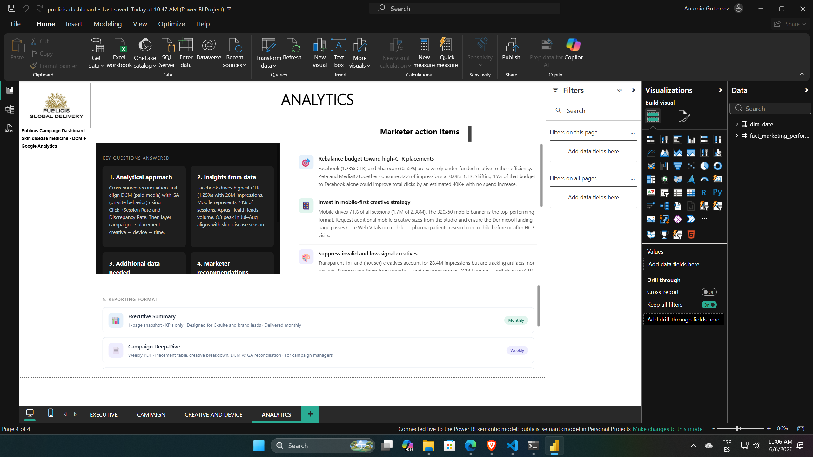

Objetivo
Centralizar métricas de diferentes plataformas para ofrecer una visión única del rendimiento publicitario y la eficiencia del gasto.
Análisis integral de campañas publicitarias y métricas de rendimiento para optimizar el retorno de inversión (ROI) en medios digitales.
Este proyecto visualiza el rendimiento multicanal de campañas publicitarias, permitiendo a los equipos de marketing ajustar sus estrategias en tiempo real basándose en datos de conversión y costo.
Centralizar métricas de diferentes plataformas para ofrecer una visión única del rendimiento publicitario y la eficiencia del gasto.
Modelado de datos complejo en Power BI con medidas DAX avanzadas para el cálculo de ROAS, CPA y tendencias de rendimiento.
Mejora en la toma de decisiones para la asignación de presupuestos, identificando canales con bajo rendimiento y escalando los de mayor impacto.


